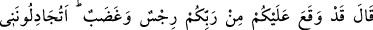
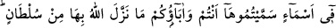
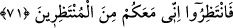

karşılık olarak “dediler ki:” Ey Hûd, “demek sen bize, tek Allah’a kulluk edelim”
kulluğu yalnız O’na yapalım “ve atalarımızın taptıklarını bırakalım” atalarımızın
taptıkları ilâhları terk edelim “diye mi geldin?” Buradaki “gelme”nin mânâsı, ya
Rasûlullah (s.a.v.)’in peygamberlikten önce Hira mağarasında ibâdet ettiği gibi Hûd
(a.s.)’ın kavminden ayrılıp Rabb’ine ibadet etmek üzere inzivaya çekildiği yerden
gelmesidir. Kendisine vahiy gelince kavmini dâvet etmek üzere yanlarına gelmiştir. Ya
da buradaki “gelme”den maksad meleklerin gelmesi gibi gökten gelmedir. Kavmi böyle
diyerek onunla alay etmiştir. Çünkü onlar, Allah’ın sadece meleklerden peygamber
göndereceğine inanıyorlardı. Yahut da burada mecaz vardır. “Gelmek”den maksad,
sadece bir işi yapmak istemektir. Sanki şöyle demişlerdir: ‘Bizden yalnızca tek Allah’a
kulluk etmemizi mi istiyor ve bununla bizi mükellef tutmayı mı düşünüyorsun?’ Nitekim
halk dilinde de meselâ “gitme” mânâsı kastedilmeden: “Bana söverek gitti.” denilir.
“Eğer” azabın ineceği ile ilgili verdiğin haberde “doğrulardan isen, bizi tehdit
ettiğin (o azab)ı” yukarıdaki 65. ayette “sakınmaz mısınız?” ifadesinin delâlet ettiği
azabı “getir.”
71. (Hûd) dedi ki: “Üzerinize Rabbinizden bir azap ve bir hışım inmiştir.
Haklarında Allah’ın hiçbir delil indirmediği, sadece sizin ve atalarınızın taktığı kuru
isimler hususunda benimle tartışıyor musunuz? Bekleyin öyleyse, şüphesiz ben de
sizinle beraber bekleyenlerdenim!”
Hûd (a.s.) “dedi ki: Artık size Rabb’inizden” Allah Teâlâ tarafından “bir ceza ve
gazab” intikam iradesi “inmiştir” yani vacip olmuştur. Bu ifâde, sebepten sonuç gibi
bahsedilmesi türünden bir mecazdır. Çünkü onlara azabın inmesi, Allah Teâlâ’nın
ilminde inmesinin vâcib olmasının sonucudur.
“Haklarında” onlara kulluk etme hususunda “Allah’ın hiçbir delil” huccet ve burhan
“indirmediği, sadece sizin ve atalarınızın taktığı kuru isimler hakkında mı benimle
tartışıyorsunuz?” Ayette, hakkında tartışılan putlar, sâhibi olmayan isimler olarak ifâde
edilmiştir. Çünkü Âd kavmi, putları “ilâhlar” olarak isimlendiriyorlar ve onların
ibadete layık olduklarını sanıyorlardı. Halbuki onlar, ulûhiyetten ve ibadete müstehak
olmaktan çok uzaktılar. Çünkü onlar sadece isimlerden ibaret olup taşıdıkları isimlerin
mânâları kendilerinde mevcut değildi.
‘Layık olmadıkları isimlerle isimlendirilen şeyler hakkında mı benimle
tartışıyorsunuz?’